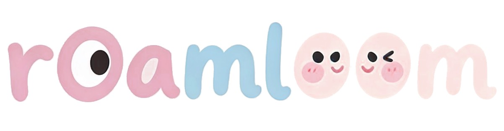
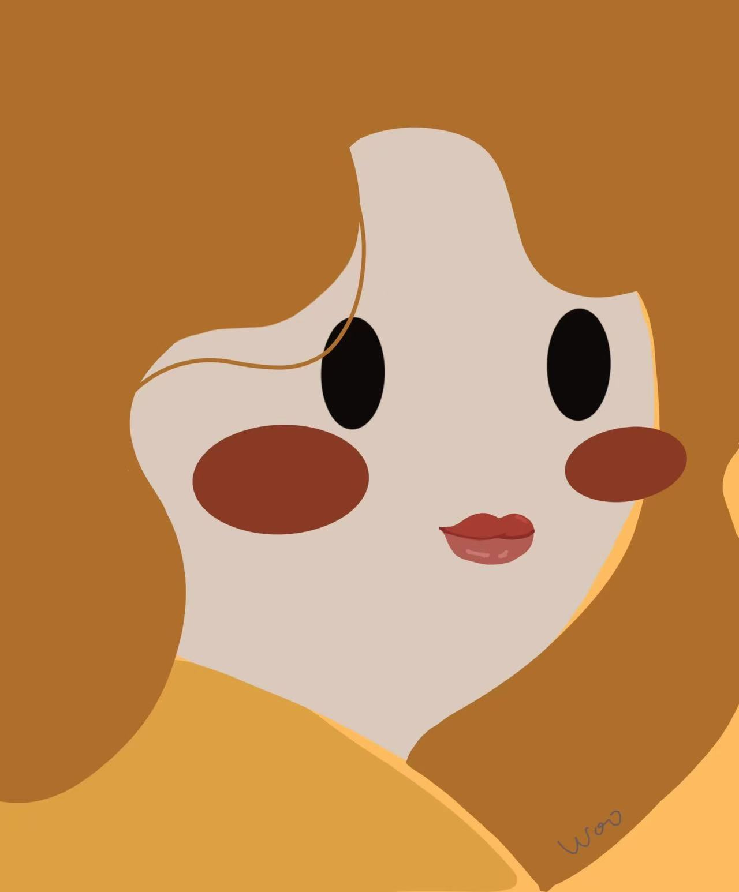
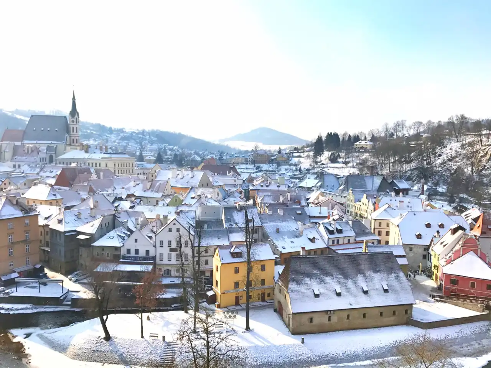

愿每一只不被束缚的猫，都能在风中收获全部的敬意与爱意

旅行时间2018年2月
第三次进入欧洲 ，选择去的地方其实也是因为被网上无止境po烂的图才动心行动起来的。
旅行时间2025年2月
今次是第三次踏入 意大利 啦，也是刚好每次隔五年一次。也是真巧。
旅行时间2024年2月
上次出国是刚疫情发生的20年1月，现在已经是后疫情时代。想想真的经过了很多事，也理解到命运的不稳定性。所以及时行乐真的很重要。